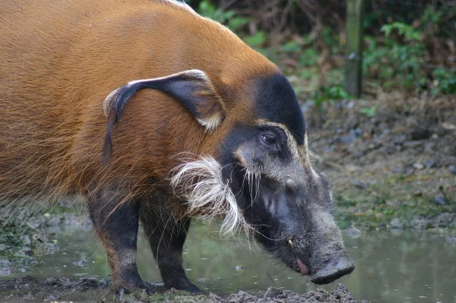

哺乳动物 · 动物界
红河猪 Potamochoerus porcus

非洲雨林中的野猪，全身红棕色、耳缘有长毛、面部有黑白花纹，善于在泥中打滚，结群活动，夜间活动为主。
- 分类
- 门脊索动物门纲哺乳纲目偶蹄目科猪科属非洲野猪属
- 栖息环境
- 非洲中西部的雨林、湿地、灌丛与农田边缘
- 地理分布
- 塞内加尔、刚果、乌干达、安哥拉等非洲中西部和南部国家
- 保护级别
- IUCN 无危（LC）
物种志
红河猪体长 1.0–1.5 米，肩高 0.55–0.8 米，体重 45–115 kg。它的被毛为红棕至橙红色，背脊有浅色鬃毛，耳缘有长长的白色毛穗，面部有黑白相间的花纹，吻部长而突出，尾巴细长；雄性面部有疣突，獠牙较小。
红河猪分布于非洲中西部和南部的雨林、湿地、灌丛和农田边缘，从塞内加尔到刚果、乌干达和安哥拉。它结成 6–20 只的群体活动，以根茎、块茎、果实、昆虫、鸟卵和小型动物为食，善用长吻拱土，也喜欢在泥中打滚降温。红河猪多在夜间和晨昏活动，白天在灌木丛中休息，繁殖季雄性之间会争斗。雌性妊娠期约 120–130 天，每胎 3–6 仔。红河猪适应力强，种群总体稳定，被列为无危。
形态与习性
- 食性根茎、块茎、果实、昆虫、鸟卵与小型动物
- 体长1.0–1.5 m，肩高 0.55–0.8 m
- 体重45–115 kg
- 寿命野外约 10–15 年
- 繁殖妊娠期约 120–130 天，每胎 3–6 仔
- 外形红棕色毛，耳缘有白色长毛穗
- 活动节律夜间和晨昏活动
趣味知识
- 红河猪全身红棕色，耳缘长着白色的长毛穗。
- 它喜欢在泥中打滚降温，并借此清除体表寄生虫。
- 红河猪用长吻拱土，寻找根茎、块茎和昆虫。
- 它结成 6–20 只的群体活动，多在夜间和晨昏活动。